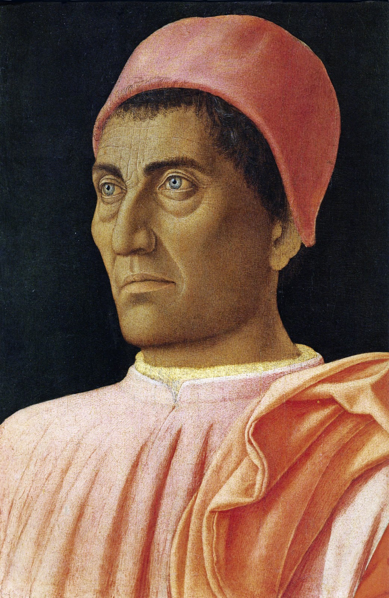

Andrea Mantegna

L'idea umanistica della corte nasce a Mantova dal cenacolo culturale e
artistico creatosi attorno ai Gonzaga e dalle consuetudini che questo
aveva generato. Il teorico di questo modo e Baldassare Castiglioni nella
sua opera il cortigiano.
L'artista che meglio rappresenta quest'epoca è Andrea Mantegna che descrive
l'ambiente di Mantova nella spendida Camera degli sposi nel Castello
di San Giorgio.